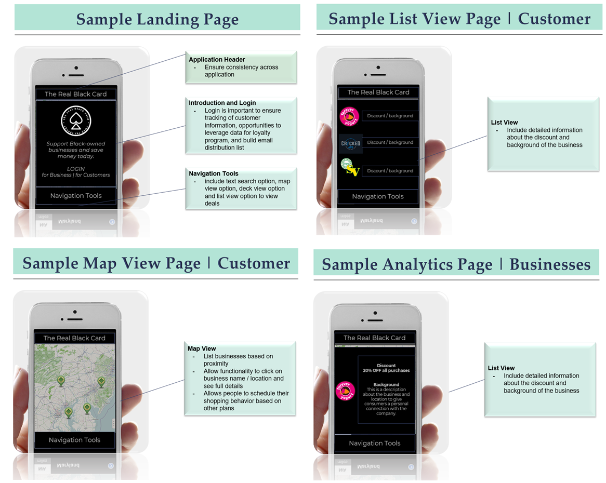

Product Research & Design
BridgED
The product idea was design during the Chicago Campus 1871 hackathon. Our team conceptualized a project and experimental learning tool for middle and high school students. Below are wireframe designs of the platform.

The presentation and market research summary is available here.
|
 |
 |
 |
|
The Real Black Card

Made in python with pygame and simplegui packages. Card images obtained from simplegui package in codeskulptor.
May consider editing the game to be multiplayer when I have the time.
Code available here.
|
|
Statistical Analysis
To be updated
Games
I created several games using Python, during an online course on interactive programming. Below are 2 of particular interest to me.
Black Jack
Made in python with pygame and simplegui packages. Card images obtained from simplegui package in codeskulptor. May consider editing the game to be multiplayer when I have the time.
Code available here.
|
 |
Asteroid Arcade Game
Made in python with the pygame and simplegui packages. Background, rocket and asteroid images obtained from simplegui package in codeskulptor.
Code available here.
|
 |